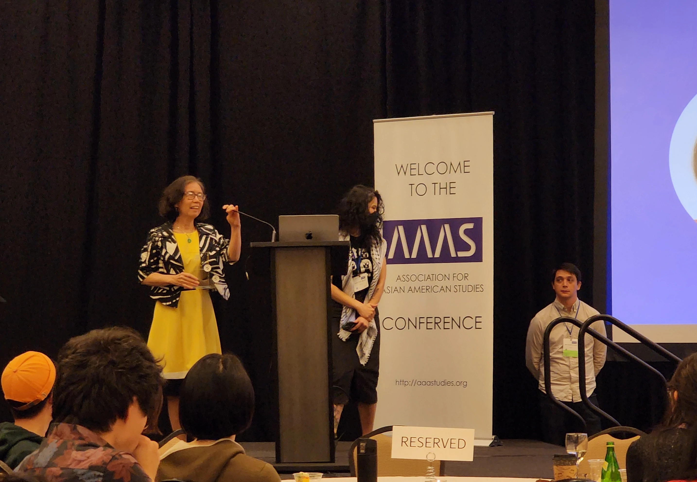

AWARDS AND RECOGNITIONS

Teaching
- Winner, 2024 Lifetime Achievement Award by Association for Asian Amercian Studies, April 27, 2024. Award Reception Speech.
- Finalist, Educator of the Year, 2017, Truman
- Winner, Truman Academic Development Support Grants (TADS)2013-2014 School Year Awards
- Winner, Truman Institute 2015 Summer Online Courses Redesign Incentive Grant, 2014
- Changjiang Scholar Chair Professor, the Chinese Ministry of education, 2012-2015
- Winner, Truman Institute 2014 Summer Online Courses Redesign Incentive Grant, 2013
- Distinguished Speaker, Susquehanna University, September 25, 2012
- Distinguished Role Model Speaker, the University of Saskatchewan, May 15, 2012
- Nominee, Mentorship Award, the Association for Asian American Studies, 2012
- Winner, 2010 Woman in Distinction, 2010 Leadership Recognition, Truman
- Rosenberg Institute Visiting Scholar, Suffolk University, Boston, MA, 2010
- The 76th Boya Lectureship, Central China Norma University, Wuhan, China, 2010
- Winner, “Incorperating Online Sources into History Teaching,” TruTech Challenge Competition, 6th Annual Tech Fair, 8th University Conference, Feb. 20, 2008, Truman
- Winner, Walker and Doris Allen Fellowship for Faculty Excellence, with a prize of $10,000, Truman, 2005-2006
- Nominee, Walker and Doris Allen Fellowship for Faculty Excellence, Truman, 2004-2005
- Winner, Golden Apple Award, Order of Omega and Truman State University's Greek Community, 2004
- Semi-Finalist, Educator of the Year, Truman, 1998
- Semi-Finalist, Educator of the Year, Truman, 1996
- Semi-Finalist, Educator of the Year, Truman, 1995
- Who's Who among American's Teachers, 1998-2012
- Who's Who in North American Education, 2011-2013
- Norminee, William O'Donnell Lee Advising Award, Truman, 1995-96
- Winner, Jepson Fellowship Grant in Active Teaching, Truman, 1993-94
- Winner, Jepson Fellowship Grant in World Literature Workshop, Truman, 1993
Research
- Winner, 2024 Lifetime Achievement Award by Association for Asian Amercian Studies, April 27, 2024
- Winner, 2022 Albert Nelson Marquis Lifetime Achievement Award, Nov. 2022
- One of 145 Eminent Scholars, the National Museum of the American People
- Winner, 2019 Center for Missouri Studies Fellowship, $5,000
- Winner, Distinguished Honorary Professor, Lishui University, Dec. 9, 2017
- Winner, Sabbatical Leave Grant, Truman, 2017-18
- Visiting Research Fellow, Hoover Institution, Stanford University, Jan-Dec. 2016, 2017-2018
- Donor, The Hoover Institution Lbrary and Aechives, Hoover Institution, Stanford University, Dec. 2016
- Visiting Professor, Department of History, University of Missouri-Columbia, 2016-17
- Editorial Board Director, Overseas Chinese History Study, Overseas Chinese History Research Institution, Beijing, China, 2013-2016
- Winner, Chinese Overseas Bureau Research Fund, 13BZQK204 2013-2015
- Changjiang Scholar Chair Professor, awarded by the Chinese Ministry of Education, among 50 awardees selected from preeminent scholars in the world and one of the few in social sciences, affiliated with Wuhan Theoretical Research Center of Overseas Chinese Affairs Office of the State Council in China, China Central Normal University, Wuhan, China, 2012-2015
- Distinguished Role Model Speaker, the University of Saskatchewan, May 15, 2012
- Winner, “Women's History Month”, March 18, 2012, Maynard Institute for Journalism Education
- Nominee, 2012 Mentorship Award, Association of Asian American Studies
- Winner, Truman Institute 2013 Summer Online Courses Redesign Incentive Grant, 2012
- Featured article “Professor Huping Ling Chronicles Chinese American History” [令狐萍教授为美国华人立传] by Jeff Han, reporter for The World Journal, February 2, 2012
- Winner, Missouri Campus Compact Gant for proposal titled Ethnicity, Community, and Globalization: Asian Americans in Mid-America, 2011
- Winner, School of Social and Cultural Studies Faculty Research Grant, 2011
- Nominee, 2011 Still Spirit Award, A.T. Still University
- Winner, 2010 Woman in Distinction, 2010 Leadership Recognition, Truman
- Nominee, 2011 Engaged Scholarship Award, Association of Asian American Studies
- Featured in Great Lives from History: Asian Americans & Pacific Islanders, Salem Press, forthcoming. Among over 80 notable Asian Americans and Pacific Islanders in Education and Scholarship
- Featured in Chinese American Writers: Eileen Chang, Amy Tan, Maxine Hong Kingston, Loung Ung, Huping Ling, Iris Chang, Gish Jen, Tim Wu, Minfong Ho. Books LLC (Editor), September 15, 2010
- Featured in “Professor Ling Giving Asian Lecture Tour,” St. Louis Chinese American News, August 26 - Sept. 9, 2010
- Winner, Sabbatical Leave Grant, Truman, 2009-10
- Winner, School of Social and Cultural Studies Faculty Research Grant, 2010, 2011, 2012
- Winner, College of Arts & Sciences Grants in Support of Scholarly and Artistic Endeavor, Truman, 2009
- Winner, Fellowship of Teaching and Learning, Truman, 2008-09
- Winner, Truman Faculty Summer Research Fellowship, Truman, 2008
- Winner, College of Arts & Sciences Grants in Support of Scholarly and Artistic Endeavor, Truman, 2008
- Winner, Fellowship of Teaching and Learning, Truman, 2007-08
- Listed in Contemporary Authors, Thomson Gale, 2008
More in Dr. Huping Ling's Resume linked in About page.